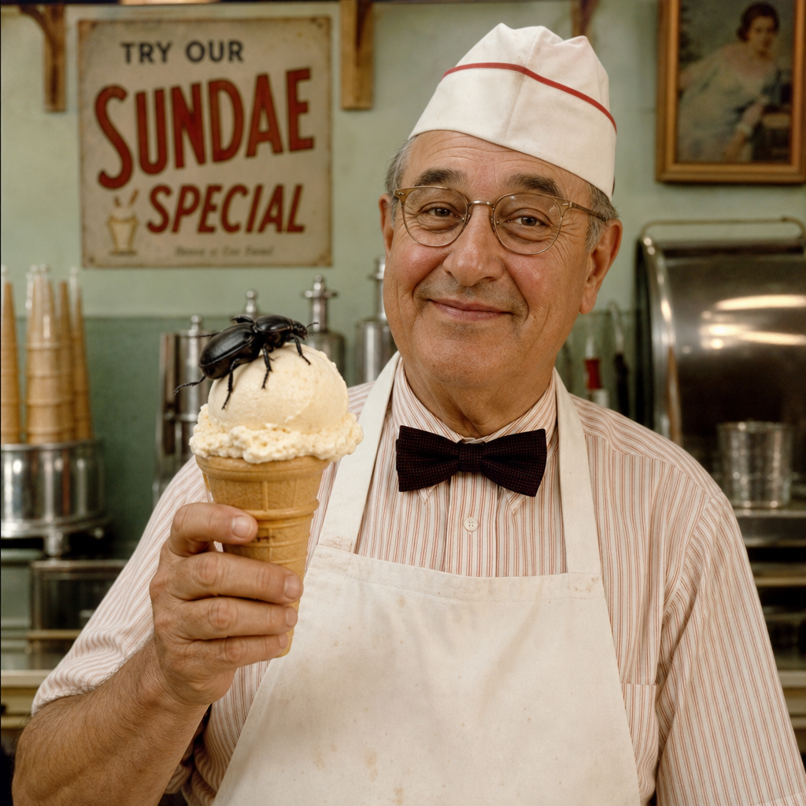

In the summer of 2019, Bartholomew "Buggy" Crumb was a moderately successful vanilla salesman with a strict no-toppings policy and a lactose problem he refused to discuss. He was eating a plain vanilla cone on a park bench in Mothville when a june beetle, mid-flight and badly off course, landed in his scoop.
Bartholomew did not notice. He took the bite. Witnesses say he paused, looked at the cone, looked at the sky, and took another. Then he sat quietly for eleven minutes, finished the cone, and walked into the nearest bank to ask for a small business loan. The loan officer, Doris, said no. He came back the next day with a cooler of prototypes. Doris tried the cricket one. Doris said yes. Doris is now our CFO.
The early days were rough. Bartholomew churned everything by hand in his garage, and his first supplier was just a porch light and a net. Neighbors complained about the smell of caramelized hornets. The health inspector visited nine times, left confused eight times, and on the ninth visit ordered a double scoop of Mealworm Fudge Ripple.
Today we run the same recipes out of our shop on Thorax Lane, with bugs raised on our own farm instead of caught at the porch light. Bartholomew still eats one plain vanilla cone every year on the anniversary of the beetle, out of respect. He says it tastes empty now.
"The beetle chose me. I just kept the promise," says Bartholomew, every time anyone asks. Nobody asks anymore. He still says it.